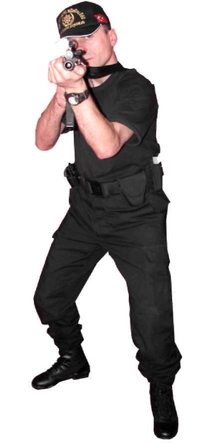

BÖLÜM
TEMEL ATIŞ TEKNİKLERİ
Resim-2.c) Nişan Alma (MP5 Makinalı Tabanca) d) NEFES KONTROLÜ
Ya k ın mesafe atışlarında nefes kontrolü söz konusu değildir. Ancak uzak mesafe atışlarında hedefe isabet zorlaştığı için nefes kontrolü yapılmalıdır. Tetik kontrolü ve nişangâh ayarının yapılması, doğal soluk aralıklarıyla olmalıdır.
e) TETİK ÇEKME
Tetik çekme, temel atış teknikleri arasında önemli unsurlardan birisidir.
Düzgün bir şekilde tetiği çekme, tetiğe baskıyı düzenli olarak artırarak, sürpriz bir ateşleme ile olur. Tetik, tetik parmağının ucu ve ilk eklemi arasındaki bölgede bulunmalıdır. Silah, hedefe doğru tutulurken, tetik parmağının sürekli olarak tetikle kontak hâlinde olması gerekir. (Atışlar arasında tetiği boş bırakmamak gerekir.) (Bakınız Resim-2.d) 35
Resim-2.d) Tetik Çekme (MP5 Makinalı Tabanca) Tekniği Uygulamalı Olarak Çalışma Şekli
^ Emniyet tedbirlerini okuyun. Atış poligonunda atış emniyeti ile ilgili gerekli önlemleri alın.
^ Eğitime katılan herkesin vücudunu, basit ısınma teknikleri ile ısındırarak çalışmaya hazırlayın. Silah ve şarjörleri kontrol edip koruyucu malzemeleri giyin ve giydirin.
^ Teknik ile ilgili atışlı çalışma yapmadan önce tekniğin tamamını kapsayacak atışsız pratik çalışma yaptırın.
^ Poligonun büyüklüğüne göre bu tekniği çalışmak için yerleştireceğiniz daireli hedef sayısını ve çalışma yaptıracağınız personel sayısını belirleyin.
^ Tekniği çalışmaya, önce 5 metre mesafeden başlayın. Daha sonra mesafeyi 10-15-20-25 metreye çıkararak çalışmayı devam ettirin.
^ Atış yapacak personele, tek şarjöre 10 adet fişek doldurtup, şarjörü tabancalarına taktırın, hedefin 5 metre mesafede karşısına geçirip atış
pozisyonu aldırın ve yukarıdaki temel atış prensiplerini uygulatarak hedefe tek tek atış yaptırın.
^ Atış yapan personelin vuruşlarının tamamının hedefin siyah kısmında olmasına dikkat edin ve bir üst mesafeye çıkararak atış yaptırmaya devam edin.
^ 25 metre mesafedeki vuruşların tamamının, hedefin siyah kısmında olması başarılı şekilde yapılmış bir atışın göstergesidir.